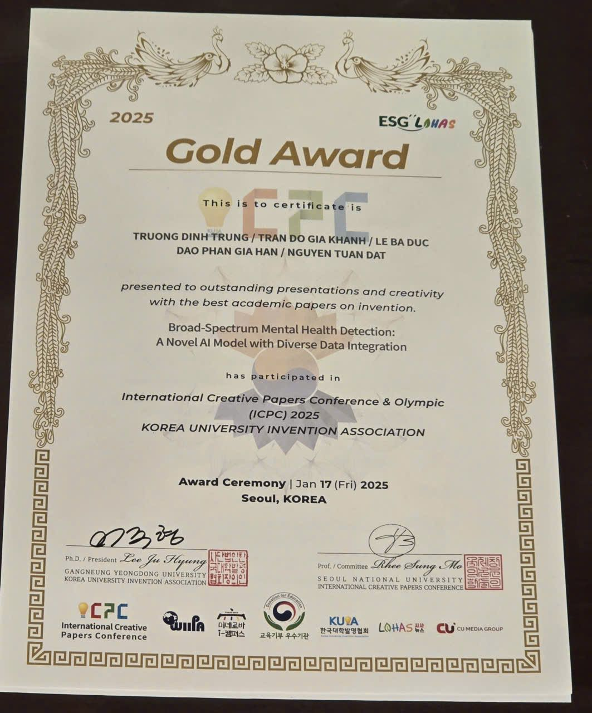
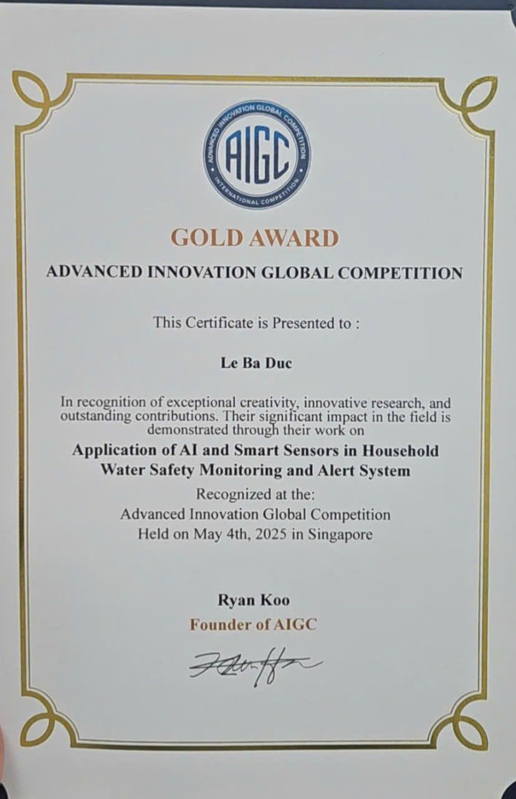

Giới thiệu
Mình là Lê Bá Đức, học sinh lớp 11 Lý 2, trường THPT Chuyên Khoa học Tự nhiên (HSGS), ĐHQG Hà Nội, định hướng ngành Kỹ thuật Máy tính và Kỹ thuật Điện. Mình đam mê Trí tuệ nhân tạo và Computer Vision: cùng nhóm đạt Gold & Special Award tại ICPC 2026 (Hàn Quốc) với mô hình AI phát hiện sớm vấn đề sức khỏe tâm lý, Huy chương Vàng AIGC 2025, và tự phát triển hệ thống camera AI giám sát trang trại thông minh. Nền tảng học thuật của mình: GPA 9.3, SAT 1470, IELTS 8.0.
“Dạy máy nhìn thấy thế giới — để con người chăm sóc thế giới tốt hơn.”
Kỹ năng
Sở thích & Quan tâm
Định hướng tương lai
Mình định hướng du học Singapore hoặc châu Âu ngành Kỹ thuật Máy tính / Kỹ thuật Điện. Mục tiêu gần là hoàn thiện hệ thống giám sát trang trại thông minh thành sản phẩm triển khai thực tế và phát triển tiếp mô hình AI phát hiện sớm vấn đề sức khỏe tâm lý đã đạt giải tại ICPC 2026.
Hành trình
Huy chương Vàng AIGC 2025 – International Artificial Intelligence Generated Content Competition; tình nguyện viên tại Làng trẻ em SOS; phát triển hệ thống camera AI giám sát trang trại lợn thông minh.
Gold & Special Award tại ICPC 2026 (Hàn Quốc) với đề tài “Broad-Spectrum Mental Health Detection: A Novel AI Model with Diverse Data Integration”; đạt IELTS 8.0, SAT 1470; thiện nguyện tại Bệnh viện Nhi Trung ương.
Nghiên cứu khoa học
Thành tích & Giải thưởng
Gold & Special Award – International Creative Papers Conference & Olympic (ICPC 2026), Hàn Quốc

Huy chương Vàng – AIGC 2025 (International Artificial Intelligence Generated Content Competition)

Chứng chỉ chuẩn hóa
SAT 1470/1600
Chứng chỉ chuẩn hóa phục vụ du học
IELTS Academic 8.0
Chứng chỉ tiếng Anh học thuật
Hoạt động ngoại khóa & Dự án
Sản phẩm cá nhân: Hệ thống camera AI giám sát trang trại lợn thông minh
Thiết kế và phát triển hệ thống giám sát trang trại thông minh dùng camera AI, cảm biến IoT và công nghệ thị giác máy tính (YOLO): theo dõi hành vi vật nuôi, phát hiện hoạt động bất thường và hỗ trợ quản lý trang trại theo thời gian thực.
- Camera AI là thiết bị trung tâm, hoạt động cả ngày lẫn đêm (hồng ngoại), vừa ghi hình vừa phân tích tư thế, vận động và hành vi của đàn lợn theo thời gian thực.
- Phát hiện sớm dấu hiệu bất thường về sức khỏe: lợn nằm bất động quá lâu (ốm/tử vong), giảm hoạt động – ít ăn, hành vi lạ như cắn hoặc quẫy.
- Tích hợp thêm cảm biến nhiệt độ, độ ẩm và khí độc (NH₃, CO₂) để đánh giá môi trường chuồng nuôi chính xác hơn.
- Khi phát hiện bất thường: cảnh báo tại chỗ bằng đèn/còi và đẩy thông báo kèm hình ảnh lên Web/App để người chăn nuôi kiểm tra ngay.
- Ý nghĩa thực tiễn: giảm tỷ lệ chết và thiệt hại kinh tế, tiết kiệm nhân công kiểm tra, góp phần xây dựng nông nghiệp thông minh với chi phí thấp, dễ triển khai ở trang trại nhỏ.
Khoảnh khắc tại ICPC 2026 & AIGC 2025
Một số hình ảnh tham dự và nhận giải tại hai cuộc thi quốc tế.
Thiện nguyện tại Bệnh viện Nhi Trung ương (2026)
Tham gia thăm hỏi, tặng quà và tổ chức hoạt động cho các bệnh nhi đang điều trị tại Bệnh viện Nhi Trung ương, Hà Nội.


{kind=link}
{kind=link}
{kind=link}
{kind=link}
{kind=link}
{kind=link}
{kind=link}
{kind=link}
{kind=link}
{kind=link}
{kind=link}
{kind=link}
{kind=link}
{kind=link}
{kind=link}
{kind=link}
Tình nguyện viên Làng trẻ em SOS (2025)
Tham gia hoạt động tình nguyện, hỗ trợ giáo dục cho trẻ em tại Làng trẻ em SOS.